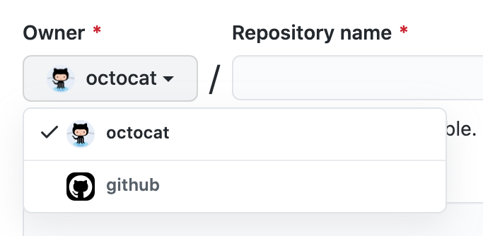
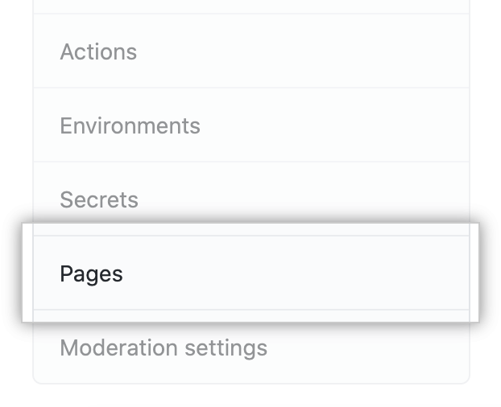

В этой статье
Примечание. Владельцы организаций могут ограничить публикацию сайтов GitHub Pages из репозиториев, принадлежащих организации. Дополнительные сведения см. В разделе «Управление публикацией сайтов GitHub Pages ».
Создание репозитория для вашего сайта
Если ваш сайт является независимым проектом, вы можете создать новый репозиторий для хранения исходного кода вашего сайта. Если ваш сайт связан с существующим проектом, вы можете добавить исходный код в репозиторий этого проекта, в /docsпапку в ветке по умолчанию или в другой ветке. Например, если вы создаете сайт для публикации документации для проекта, который уже находится на GitHub, вы можете захотеть сохранить исходный код сайта в том же репозитории, что и проект.
Если учетная запись, которой принадлежит репозиторий, использует GitHub Free или GitHub Free для организаций, репозиторий должен быть общедоступным.
Если вы хотите создать сайт в существующем репозитории, перейдите к разделу « Создание вашего сайта ».
- В правом верхнем углу любой страницы используйте + раскрывающееся меню и выберите « Новый репозиторий».

- Используйте раскрывающееся меню « Владелец» и выберите учетную запись, которой вы хотите владеть
репозиторием.
 - Введите имя для вашего репозитория и необязательное описание. Если вы создаете сайт пользователя или
организации, ваш репозиторий должен называться user.github.ioили organization.github.io. Если название
вашего пользователя или организации содержит прописные буквы, вы должны писать строчные буквы. Для
получения дополнительной информации см...
« О страницах GitHub »
- Выберите видимость репозитория. Для получения дополнительной информации см.«О
репозиториях ».

- Выберите Инициализировать этот репозиторий с помощью README .

- Щелкните Создать репозиторий .

Создание вашего сайта
Прежде чем вы сможете создать свой сайт, у вас должен быть репозиторий для вашего сайта на GitHub. Если вы не создаете свой сайт в существующем репозитории, см. « Создание репозитория для вашего сайта » .
- На GitHub перейдите в репозиторий вашего сайта.
- Решите, какой источник публикации вы хотите использовать. Для получения дополнительной информации см. « О страницах GitHub ».
- Если выбранный вами источник публикации уже существует, перейдите к источнику публикации. Если выбранный вами источник публикации не существует, создайте источник публикации.
- В корне источника публикации создайте новый файл с именем index.md, содержащий контент, который вы хотите отображать на главной странице вашего сайта.
- Настройте источник публикации. Дополнительные сведения см. В разделе .« Настройка источника публикации для сайта GitHub Pages »
- Под именем вашего репозитория нажмите Настройки .

- На левой боковой панели щелкните Страницы .
- При желании, если вы публикуете сайт проекта из частного или внутреннего репозитория, принадлежащего организации, использующей GitHub Enterprise Cloud, выберите видимость для своего сайта. В разделе «Страницы GitHub» выберите раскрывающееся меню видимости страниц GitHub , затем щелкните видимость. Для получения дополнительной информации см. « Изменение видимости вашего сайта GitHub Pages ».
- Чтобы просмотреть опубликованный сайт, в разделе «Страницы GitHub» щелкните URL-адрес своего сайта.
Примечание. После отправки изменений на GitHub публикация изменений на вашем сайте может занять до 20 минут.
Если через час изменения не отображаются в браузере, см. «
Об ошибках сборки Jekyll для сайтов GitHub Pages ».
Примечание . Если ваш сайт не был опубликован автоматически, убедитесь, что кто-то с правами администратора и подтвержденным адресом электронной почты отправил в источник публикации.
Следующие шаги
Вы можете добавить на свой сайт больше страниц, создав больше новых файлов. Каждый файл будет доступен на вашем сайте в той же структуре каталогов, что и ваш источник публикации. Например, если источником публикации для сайта вашего проекта является gh-pagesветвь, и вы создаете новый файл с именем /about/contact-us.mdв gh-pagesветке, файл будет доступен по адресу https://user.github.io/repository/about/contact-us.html.
Вы также можете добавить тему, чтобы настроить внешний вид вашего сайта. Дополнительные сведения см. В разделе « Добавление темы на сайт GitHub Pages с помощью средства выбора темы ».
Чтобы еще больше настроить свой сайт, вы можете использовать Jekyll, генератор статических сайтов со встроенной поддержкой GitHub Pages. Для получения дополнительной информации см. « О страницах GitHub и Jekyll ».